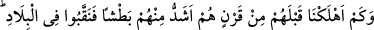
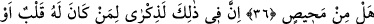
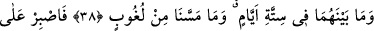
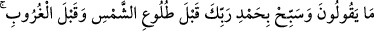
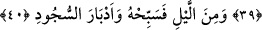

GECENİN BİR BÖLÜMÜNDE
O’NU TESBİH ET
36. Biz, onlardan önce kendilerinden daha güçlü olan, diyar diyar dolaşan nice
nesilleri helâk etmişizdir. Kurtuluş var mı!
37. Şüphesiz ki bunda aklı olan veya hazır bulunup kulak veren kimseler için bir
öğüt vardır.
38. Andolsun biz, gökleri, yeri ve ikisi arasında bulunanları altı günde yarattık.
Bize hiçbir yorgunluk çökmedi.
39. (Rasûlüm!) Onların dediklerine sabret. Güneşin doğuşundan önce de,
batışından önce de Rabbini hamd ile tesbih et.
40. Gecenin bir bölümünde ve secdelerin ardından da O’nu tesbih et.
“Biz, onlardan önce kendilerinden daha güçlü olan, diyar diyar dolaşan nice
nesilleri helâk etmişizdir.”
Âyetteki “__WORD__” burada teksîr; yani çokluk ifade eder. “Helâk ettik” fiilinin mef’ûlü
olmak üzere gelmiştir, soru ifade etmez. “Karn”, birbirlerine bağlı yani peşisıra gelen
kavim demektir. Âyetin anlamı “Senden önce peşpeşe gelen ve rasullerini yalanlayan
birçok topluluğu biz helak ettik” şeklindedir. Bu kavimler, Mekke kâfirleridir.
Gerçekte senin kavminden önce dünya topluluklarından kendi zamanlarında helâk
ettiğimiz Firavun, Semûd ve Âd gibi kavimlerden olanlar Mekke kâfirlerinden kuvvet
bakımından daha çetin, beden büyüklüğü bakımından daha büyüktüler.
Burada geçmiş dönemlerde temerrüd halindeki insanların helak edildiğine işâret
vardır. Böylelikle kudretin kemâli ve apaçık hikmet gösterilerek hayra kâbil olan
nefislerin bundan teeddüb etmesi, selim kaplerin de öğüt ve ibret alması istenmektedir.
Âyetteki “nakb” fiili Kâmûs’ta, “yeryüzünde gitmek” olarak açıklanmıştır.
Rivâyetlerde bundan bahsedilir. Nakb, dağ yolu demektir.